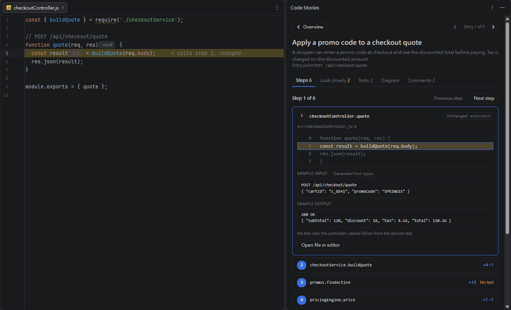
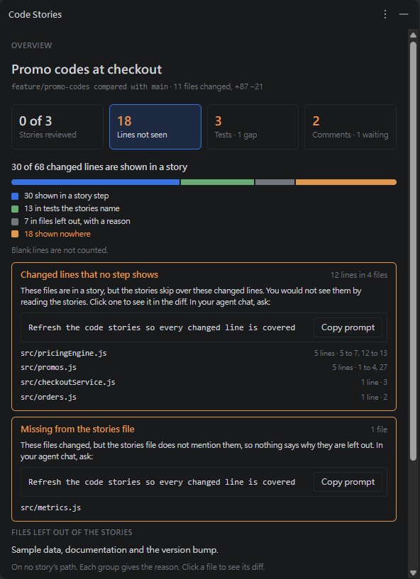

For VS Code and IntelliJ. Works with Claude Code and other agents.
Review AI-written code in the order it runs.
Code Stories shows a change as a set of stories. Each story starts at an entry point and follows the calls down to the code that changed.

The problem
The agent is fast. The review is not.
AI agents write code fast. One request can change twenty files in a few minutes. A person must still review that code.
A diff shows the files in alphabetical order. That order does not show how the code runs. You must rebuild the call path in your head, for every change.
You read everything
The review is complete, but you become the bottleneck.
You skim and approve
The review is fast, but you miss a defect.
Code Stories removes this choice
It keeps the quality of a full review and makes the review faster.
The idea
The agent that wrote the change tells you how it runs.
The agent writes stories. You read the change in the order it runs, and the editor shows the real code at each step.
See the full review, screen by screenA story is one behaviour
Something a user can see. Example: "A shopper can enter a promo code at checkout."
It starts at an entry point
A route, an event handler or a command.
Each step is one function
The steps follow the call path. The signature of the function is the first line.
A step shows what changed there
The changed lines of that function, and a sample input and output.
The tool also checks the agent
You do not have to trust that the stories are complete.



How it works
A loop between you and the agent.
The agent writes code
You give the agent a task, as you do now.
The agent writes stories
The skill tells the agent how. A validator compares the stories with the diff.
You read the stories
In your editor, one step at a time. You write a comment where the code is not correct.
The agent answers
It changes the code, declines with a reason, or explains. Then you review only what is new.
The editor plugin and the agent exchange data through files in the .stories/ folder of your project. There is no account and no online service.
Install it from the terminal.
You install two things: the agent skill, and the plugin for your editor. You do not have to clone a repository.
Create code stories for this branch